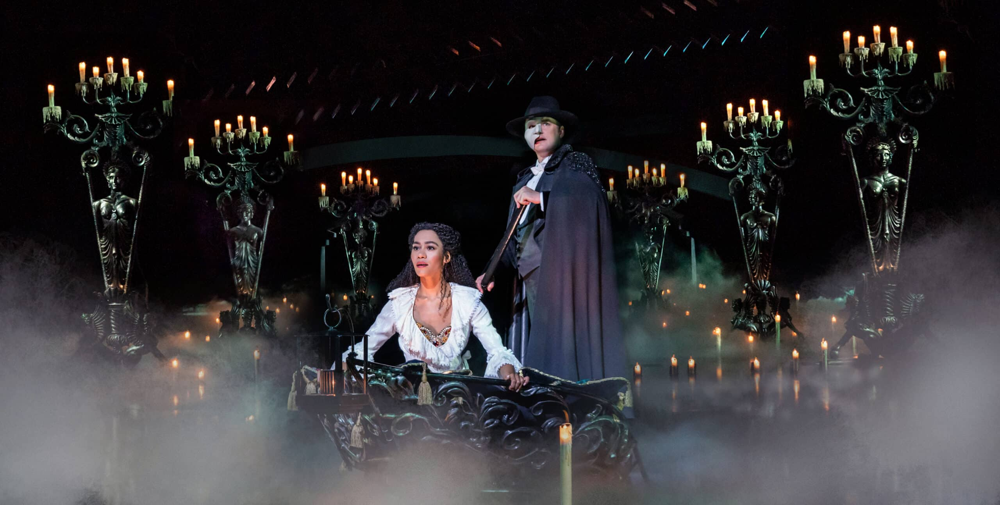

An art form that delivers such joy!
Musical theater is a form of performance that combines spoken words, singing, acting, and dance.
It truly has the power to transform audiences and performers alike. It is one of the most collaborative art forms in existence. It takes a whole village to put on a production!

A famous scene from Andrew Lloyd Webber's "Phantom of the Opera."
Musical theater has changed a lot over the decades. Here are some of the biggest eras:
Here is Hamilton's "My Shot" performed live at the 2016 Tony Awards.
This interactive chart explores 100 years of women conductors in classical music and theater.
Musical theater builds community, teaches empathy, and gives people a way to tell important stories through art. Whether you are in the audience or on the stage, it is an experience unlike anything else.